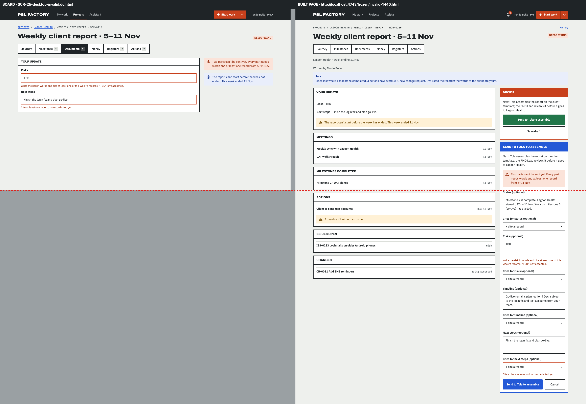
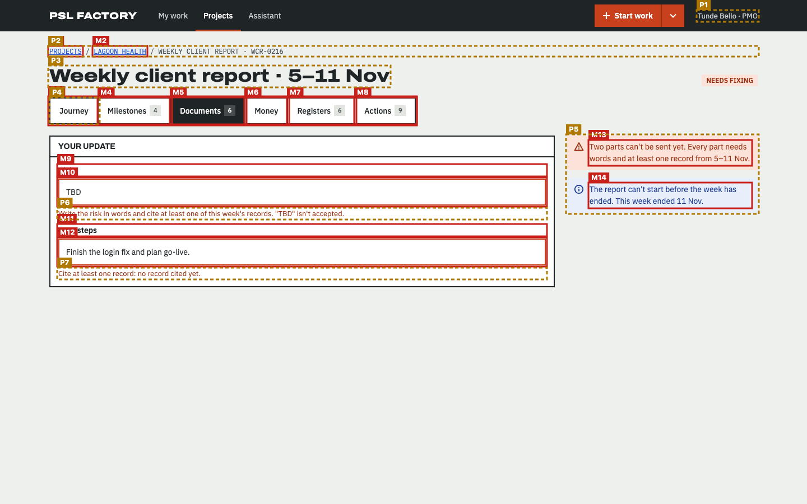
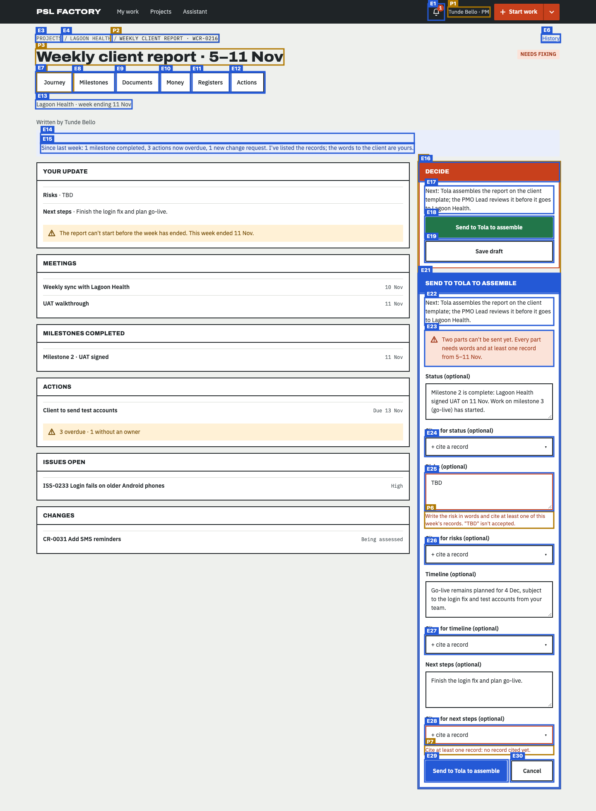
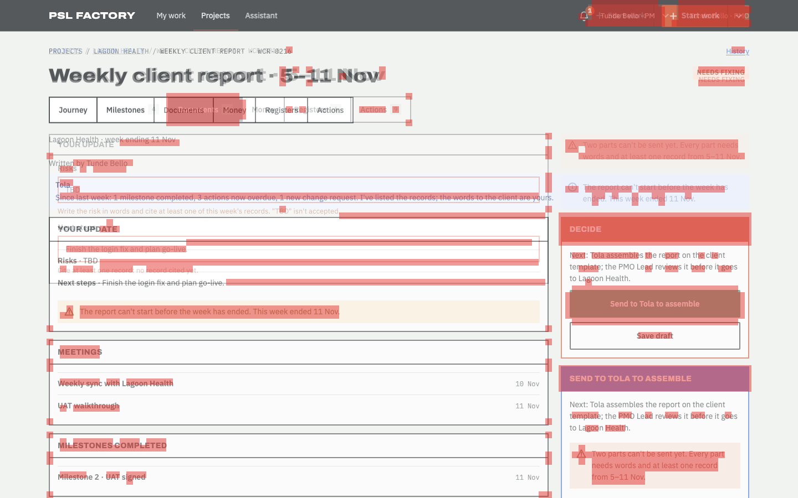

Does the built page follow the design?
Board SCR-25-desktop-invalid.dc.html compared with http://localhost:4743/frozen/invalid-1440.html at 1440px wide · 2026-11-15T14:08:19.223Z
- Every board item is on the page or approved as an exception (100%).
- Visual match 78.3 is below 90.
- 7 item(s) are in a different place; review them (not part of the pass rule unless --strict-position).
17 of 31 things drawn on the board were found on the page: headings, buttons, links, search and filter controls, table columns, labels and the repeated rows (counted once, not per row).
How closely the shapes line up: blocks, bars, tables and text areas, compared in 12px squares over the top 900px. Different words in the same place still count as a match, so sample data does not lower the score.
Missing from the built page 14
Drawn on the board but not found on the page. Each one must be built, or approved as an exception.
| # | What | Text on the board | Where on the board | Exception |
|---|---|---|---|---|
| M1 | Link | PROJECTS | left, 84px down | approved Conflicts 4: the work item page keeps its own title, tabs, facts strip and station track; the board's project tab bar and its Projects / Lagoon Health crumb links are not drawn. The page's crumb under the header carries the same words as plain text. · design engineer, 15 Nov (D-71) |
| M2 | Link | LAGOON HEALTH | left, 84px down | approved Conflicts 4: the work item page keeps its own title, tabs, facts strip and station track; the board's project tab bar and its Projects / Lagoon Health crumb links are not drawn. The page's crumb under the header carries the same words as plain text. · design engineer, 15 Nov (D-71) |
| M3 | Tabs | Project | left, 174px down | approved Conflicts 4: the work item page keeps its own title, tabs, facts strip and station track; the board's project tab bar and its Projects / Lagoon Health crumb links are not drawn. The page's crumb under the header carries the same words as plain text. · design engineer, 15 Nov (D-71) |
| M4 | Tab | Milestones 4 | left, 176px down | approved Conflicts 4: the work item page keeps its own title, tabs, facts strip and station track; the board's project tab bar and its Projects / Lagoon Health crumb links are not drawn. The page's crumb under the header carries the same words as plain text. · design engineer, 15 Nov (D-71) |
| M5 | Tab | Documents 6 | left, 176px down | approved Conflicts 4: the work item page keeps its own title, tabs, facts strip and station track; the board's project tab bar and its Projects / Lagoon Health crumb links are not drawn. The page's crumb under the header carries the same words as plain text. · design engineer, 15 Nov (D-71) |
| M6 | Tab | Money | left, 176px down | approved Conflicts 4: the work item page keeps its own title, tabs, facts strip and station track; the board's project tab bar and its Projects / Lagoon Health crumb links are not drawn. The page's crumb under the header carries the same words as plain text. · design engineer, 15 Nov (D-71) |
| M7 | Tab | Registers 6 | middle, 176px down | approved Conflicts 4: the work item page keeps its own title, tabs, facts strip and station track; the board's project tab bar and its Projects / Lagoon Health crumb links are not drawn. The page's crumb under the header carries the same words as plain text. · design engineer, 15 Nov (D-71) |
| M8 | Tab | Actions 9 | middle, 176px down | approved Conflicts 4: the work item page keeps its own title, tabs, facts strip and station track; the board's project tab bar and its Projects / Lagoon Health crumb links are not drawn. The page's crumb under the header carries the same words as plain text. · design engineer, 15 Nov (D-71) |
| M9 | Text | Risks | middle, 295px down | approved Conflicts 1 and 2 (Option A): the board draws the four parts as open text with chips and "+ cite a record" links; the page shows the saved parts read-only, and opens the four labelled text areas and cite pickers on press. The same words are in the form's controls (text areas and the picker), not as page text. · design engineer, 15 Nov (D-69) |
| M10 | Text | TBD | middle, 319px down | approved Conflicts 7: the same words are on the page (the server's 422 message in the form's alert, per-part messages under their inputs, the week-end sentence in the section note, the saved parts in the form's text areas); the page draws them under a different role or inside a form control, and the two good parts stay in the form. · design engineer, 15 Nov (D-71) |
| M11 | Pagination | Next steps | middle, 402px down | approved Conflicts 1 and 2 (Option A): the board draws the four parts as open text with chips and "+ cite a record" links; the page shows the saved parts read-only, and opens the four labelled text areas and cite pickers on press. The same words are in the form's controls (text areas and the picker), not as page text. · design engineer, 15 Nov (D-69) |
| M12 | Text | Finish the login fix and plan go-live. | middle, 426px down | approved Conflicts 7: the same words are on the page (the server's 422 message in the form's alert, per-part messages under their inputs, the week-end sentence in the section note, the saved parts in the form's text areas); the page draws them under a different role or inside a form control, and the two good parts stay in the form. · design engineer, 15 Nov (D-71) |
| M13 | Text | Two parts can't be sent yet. Every part needs words and at least one record from 5–11 Nov. | right, 252px down | approved Conflicts 7: the same words are on the page (the server's 422 message in the form's alert, per-part messages under their inputs, the week-end sentence in the section note, the saved parts in the form's text areas); the page draws them under a different role or inside a form control, and the two good parts stay in the form. · design engineer, 15 Nov (D-71) |
| M14 | Text | The report can't start before the week has ended. This week ended 11 Nov. | right, 328px down | approved Conflicts 7: the same words are on the page (the server's 422 message in the form's alert, per-part messages under their inputs, the week-end sentence in the section note, the saved parts in the form's text areas); the page draws them under a different role or inside a form control, and the two good parts stay in the form. · design engineer, 15 Nov (D-71) |
In a different place 7
Found on both, but in a different order, side of the page, or area (for example inside the table frame instead of above it).
| # | What | How it moved |
|---|---|---|
| P1 | Text Tunde Bello · PMO |
|
| P2 | Text PROJECTS / LAGOON HEALTH / WEEKLY CLIENT REPORT · WCR-0216 |
|
| P3 | Heading Weekly client report · 5–11 Nov |
|
| P4 | Tab Journey |
|
| P5 | Side panel |
|
| P6 | Text Write the risk in words and cite at least one of this week's records. "TBD" isn't accepted. |
|
| P7 | Text Cite at least one record: no record cited yet. |
|
Looks different 7
Found on both, but styled differently: table rows and cells, fonts, colours, underlines, outlines, corners. Not part of the score; check each one against the board.
| What | Difference |
|---|---|
| Link "Projects" |
|
| Link "Start work" |
|
| Link "More ways to start" |
|
| Text "PROJECTS / LAGOON HEALTH / WEEKLY CLIENT REPORT · WCR-0216" |
|
| Heading "Weekly client report · 5–11 Nov" |
|
| Tab "Journey" |
|
| Text "YOUR UPDATE" |
|
On the page but not on the board 30
Built but not drawn. Some are expected (data, status lines); the rest need the design engineer to approve or remove them.
| # | What | Text on the page | Where on the page |
|---|---|---|---|
| E1 | Button | Alerts, 1 unread | right, 11px down |
| E2 | Navigation area | Where this sits | left, 85px down |
| E3 | Text | PROJECTS | left, 85px down |
| E4 | Text | LAGOON HEALTH | left, 85px down |
| E5 | Navigation area | Work item | right, 85px down |
| E6 | Link | History | right, 84px down |
| E7 | Navigation area | Project | left, 175px down |
| E8 | Text | Milestones | left, 177px down |
| E9 | Text | Documents | left, 177px down |
| E10 | Text | Money | left, 177px down |
| E11 | Text | Registers | left, 177px down |
| E12 | Text | Actions | middle, 177px down |
| E13 | Text | Lagoon Health · week ending 11 Nov | left, 243px down |
| E14 | Text | Tola | middle, 324px down |
| E15 | Text | Since last week: 1 milestone completed, 3 actions now overdue, 1 new change request. I've listed the records; the words to the client are yours. | middle, 347px down |
| E16 | Heading | DECIDE | right, 394px down |
| E17 | Pagination | Next: Tola assembles the report on the client template; the PMO Lead reviews it before it goes to Lagoon Health. | right, 451px down |
| E18 | Button | Send to Tola to assemble | right, 524px down |
| E19 | Button | Save draft | right, 582px down |
| E20 | Form | Send to Tola to assemble | right, 662px down |
| E21 | Heading | SEND TO TOLA TO ASSEMBLE | right, 664px down |
| E22 | Pagination | Next: Tola assembles the report on the client template; the PMO Lead reviews it before it goes to Lagoon Health. | right, 721px down |
| E23 | alert | Two parts can't be sent yet. Every part needs words and at least one record from 5–11 Nov. | right, 800px down |
| E24 | Drop-down | Cites for status (optional) | right, 1057px down |
| E25 | Text field | Risks (optional) | right, 1144px down |
| E26 | Drop-down | Cites for risks (optional) | right, 1317px down |
| E27 | Drop-down | Cites for timeline (optional) | right, 1535px down |
| E28 | Pagination | Cites for next steps (optional) | right, 1753px down |
| E29 | Button | Send to Tola to assemble | right, 1837px down |
| E30 | Button | Cancel | right, 1837px down |
Pictures
The red dashed line on the side-by-side marks how far down the visual score looks. On the marked board, red boxes are missing items (M). On the marked page, amber boxes moved (P) and blue boxes are extra (E). In the difference picture both screens are laid over each other and red squares are where the shapes do not line up.






Notes about this run
- Images: /_blob/ images are served from /Users/Hunchoo/psl-factory/design/mascots/canvas-assets.json (19 mapped).
Found on both (17)
| Navigation area | Main | |
| Text | PSL FACTORY | |
| Link | My work | |
| Link | Projects | |
| Link | Assistant | |
| Link | Start work | |
| Link | More ways to start | |
| Text | Tunde Bello · PMO | page: Tunde Bello · PM |
| Main area | ||
| Text | PROJECTS / LAGOON HEALTH / WEEKLY CLIENT REPORT · WCR-0216 | page: WEEKLY CLIENT REPORT · WCR-0216 |
| Heading | Weekly client report · 5–11 Nov | |
| Text | NEEDS FIXING | |
| Tab | Journey | |
| Text | YOUR UPDATE | |
| Text | Write the risk in words and cite at least one of this week's records. "TBD" isn't accepted. | |
| Text | Cite at least one record: no record cited yet. | |
| Side panel | page: Review and decide |
How the scores are worked out
Element coverage. The board is drawn locally from its own template and sample data. From the drawn board the check lists everything a person sees or uses: page areas (navigation, main, search), headings, links, buttons, form fields with their labels, table column headers, filter, search and pagination controls and fixed labels. Rows drawn from sample data count once, as a pattern ("table rows with these columns"). Each item is looked for on the page by its kind and its words (ignoring capitals, curly quotes and small wording differences, at least 80% similar). Coverage is found ÷ drawn. Order is compared in reading order (top to bottom, left to right); an item is "moved" when it breaks the order, sits on the other side of the page, or sits inside a different area.
Visual match. Both full-page screenshots are compared in 12px squares after a light blur, over the board's height (900px; the page is 1959px). Only squares with something in them count. A square matches when its colours line up, or when both have text or lines there. Score = matching ÷ counted squares (4879 of 6232). Over every square including empty background it would be 85.
Technical details
Board file: /Users/Hunchoo/psl-factory/design/canvas/project/SCR-25-desktop-invalid.dc.html
Viewport: 1440×900
Report data: report.json
Exceptions file: /Users/Hunchoo/psl-factory/delivery/features/F-21/fidelity-exceptions.json